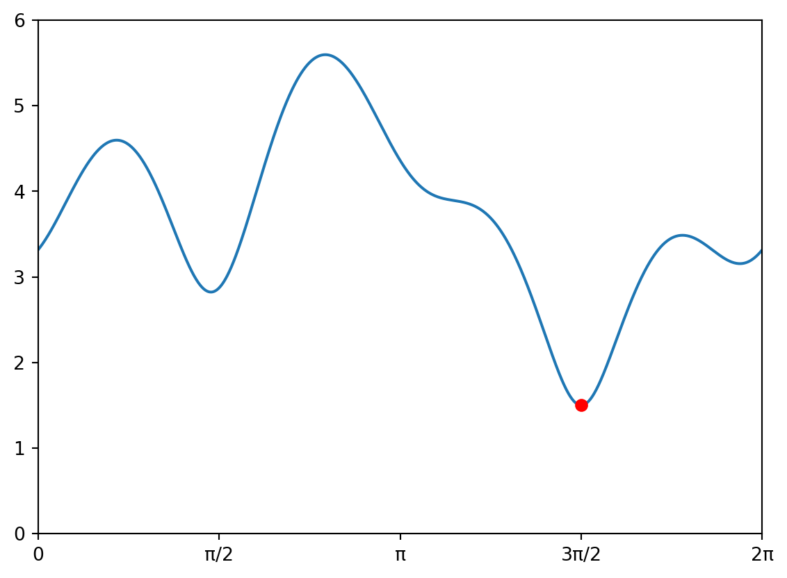

Code
import math
def f(x):
v0 = x
v1 = v0**2
v2 = math.sin(v1)
y = v2
return y
x0 = math.pi / 2
print(f(x0))0.6242659526396992In Kapitel 2 haben wir zwei Methoden für die Berechnung von Ableitungen kennen gelernt, die beide ihre Schwächen haben. Während die numerische Ableitung mit geringem Aufwand berechnet werden kann, sind ihre Näherungswerte für viele Anwendungen zu ungenau. Symbolische Ableitungen andererseits liefern zwar exakte Werte von Ableitungen, sind aber mit grossem Rechenaufwand verbunden. Die hier vorgestellte Algorithmische Differentiation (AD) vereinigt die Vorteile der beiden Methoden. Sie liefert uns (bis auf Maschinengenauigkeit) exakte Werte von Ableitungen mit nur einem geringen zusätzlichen Rechenaufwand:
“AD as a technical term refers to a specific family of techniques that compute derivatives trhough accumulation of values during code execution to generate numerical derivative evaluations rather than derivative expressions. This allows accurate evaluation of derivatives at machine precision with only a small constant factor of overhead and ideal asymptotic efficiency.” (Baydin u. a. (2018), S. 2)
In diesem Kapitel lernen wir die Standard Algorithmische Differentiation (SAD, auch Vorwärts-AD genannt) kennen, welche die einfachste Variante der erwähnten “family of techniques” ist. Wir beschränken uns zunächst wieder auf Funktionen \(f : \mathbb{R} \rightarrow \mathbb{R}\) und werden dies später auf Funktionen \(f : \mathbb{R}^n \rightarrow \mathbb{R}^m\) erweitern. Neben der Standard-AD gibt es noch die Adjungierte Algorithmische Differentiation (AAD, auch Rückwärts-AD genannt). Die Vorteile dieser Methode offenbaren sich jedoch erst für Funktionen in höherdimensionalen Räumen.
Gemäss unserer Konvention in Kapitel 1.2 berechnen wir eine mathematische Funktion, indem wir sie in ihre Bestandteile zerlegen, und die Zwischenergebnisse Variablen v zuweisen. Wie im obigen Zitat erwähnt, besteht die Grundidee der AD darin, eine Reihe von Hilfsvariablen vdot einzuführen, welche jeweils die Werte der Ableitungen enthalten. In diesem Kapitel machen wir dies explizit, indem wir jede Programmzeile, die ein v berechnet, um die Berechnung des zugehörigen vdot erweitern. Dies scheint zunächst umständlich zu sein, aber im nächsten Abschnitt werden wir eine Klasse schreiben, die diese Schritte für uns automatisiert. Wie Marc Henrard in seinem Buch schreibt:
“There are as many shades of AD as there are AD users. [This chapter] provides to the user the black and the white; it is up to him to get the correct shade of grey that fits his taste and his requirements.” (Henrard (2017), S. 18)
Beginnen wir mit einem Beispiel:
Wir möchten den Funktionswert und die Ableitung der Funktion \(y=f(x)=\sin(x^2)\) an der Stelle \(x_0=\frac{\pi}{2}\) bestimmen. Das folgende Programm berechnet den Funktionswert.
import math
def f(x):
v0 = x
v1 = v0**2
v2 = math.sin(v1)
y = v2
return y
x0 = math.pi / 2
print(f(x0))0.6242659526396992\(f\) ist eine zusammengesetzte Funktion, die wir mit den Funktionen
\[\begin{align*} v_0(x) &= x \\ v_1(v_0) &= v_0 ^2 \\ v_2(v_1) &= \sin(v_1) \end{align*}\]
schreiben können als \(y=f(x)=v_2(v_1(v_0(x)))\). Die Ableitung berechnet sich dann mit der Kettenregel zu \[
f'(x) = \frac{dv_2}{dv_1} \cdot \frac{dv_1}{dv_0} \cdot \frac{dv_0}{dx} = \cos(v_1)\cdot 2v_0 \cdot 1 = \cos(x^2) \cdot 2x \cdot 1
\] Wir können also die Ableitung von f(x) berechnen, indem wir jede Zeile des Programms gemäss den bekannten Regeln ableiten:
v0dot = 1
v1dot = 2 * v0 * v0dot
v2dot = math.cos(v1) * v1dotMan beachte, dass durch die Konvention, dass immer v0 = x gesetzt wird, auch immer v0dot = 1 ist. Nun können wir unsere Funktion so ergänzen, dass nicht nur der Funktionswert, sondern auch die Ableitung an der Stelle \(x_0\) berechnet wird:
import math
def f(x):
v0dot = 1
v0 = x
v1dot = 2 * v0 * v0dot
v1 = v0**2
v2dot = math.cos(v1) * v1dot
v2 = math.sin(v1)
ydot = v2dot
y = v2
return [y, ydot]
x0 = math.pi / 2
print(f(x0))[0.6242659526396992, -2.4542495411512917]Die Korrektheit des Programms können wir mit GeoGebra überprüfen, welches Ableitungen symbolisch berechnet.
Beachte, dass wir konsequent die Kettenregel verwendet haben. So wird aus v1 = v0**2 etwa v1dot = 2 * v0 * v0dot oder aus v2 = sin(v1) wird v2dot = cos(v1) * v1dot.
Übungsaufgabe 3.1 (Programm ableiten)
Ändere das vorherige Programm so ab, dass der Funktionswert und die Ableitung der Funktion \(y = f(x) = \ln(\sin(x^2))\) an der Stelle \(x_0 = \frac{\pi}{2}\) berechnet wird. Überprüfe deine Lösung mit GeoGebra.
Es müssen lediglich zwei weitere Zeilen eingefügt werden und zwar für die Berechnung von v3 und v3dot. Vergiss nicht, die richtigen Werte zurückzugeben.
import math
def f(x):
v0dot = 1
v0 = x
v1dot = 2 * v0 * v0dot
v1 = v0**2
v2dot = math.cos(v1) * v1dot
v2 = math.sin(v1)
v3dot = 1 / v2 * v2dot
v3 = math.log(v2)
ydot = v3dot
y = v3
return [y, ydot]
x0 = math.pi / 2
print(f(x0))[-0.4711787952593891, -3.9314166194288416]Ein Programm, welches gemäss der Konvention in Kapitel 1.2 geschrieben ist, wird folgendermassen abgeleitet:
v wird eine neue Variable vdot für den Wert der Ableitung definiert, angefangen bei v0dot = 1.Übungsaufgabe 3.2 (Produktregel)
Das folgende Programm berechnet die Funktion \(y = f(x) = (2+x)(x-3)\):
def f(x):
v0 = x
v1 = 2 + v0
v2 = v0 - 3
y = v1 * v2
return yLeite dieses Programm ab. Dein Programm soll die Gleichung der Tangente \(t(x) = f(x_0) + f'(x_0)\cdot (x-x_0)\) an der Stelle \(x_0 = 2\) ausgeben.
def f(x):
v0dot = 1
v0 = x
v1dot = v0dot
v1 = 2 + v0
v2dot = v0dot
v2 = v0 - 3
ydot = v1dot * v2 + v1 * v2dot # Produktregel
y = v1 * v2
return [y, ydot]
x0 = 2
[y0, y0dot] = f(x0)
print("t(x) =", y0, "+", y0dot, "* ( x -", x0, ")")t(x) = -4 + 3 * ( x - 2 )Übungsaufgabe 3.3 (Programm ableiten)
Leite die Funktion aus Übungsaufgabe 1.1 ab. Gib den Funktionswert und den Wert der Ableitung an der Stelle \(x_0=-2\) aus.
import math
def f(x):
v0dot = 1
v0 = x
v1dot = 2 * v0 * v0dot
v1 = v0 ** 2
v2dot = v1dot
v2 = v1 + 2
v3dot = -1/2 * v1dot
v3 = -v1 / 2
v4dot = -math.sin(v2) * v2dot
v4 = math.cos(v2)
v5dot = math.exp(v3) * v3dot
v5 = math.exp(v3)
v6dot = v4dot * v5 + v4 * v5dot
v6 = v4 * v5
ydot = v6dot - 1 / v0**2 * v0dot
y = v6 + 1 / v0
return [y, ydot]
x0 = -2
print(f(x0))[-0.3700550823007931, -0.14136926695938976]Übungsaufgabe 3.4 (Programm ableiten)
Leite die Funktion aus Übungsaufgabe 1.2 ab.
import math
def f(x):
v0dot = 1
v0 = x
v1dot = 2 * v0 * v0dot
v1 = v0 ** 2
v2dot = v1dot
v2 = v1 + 1
v3dot = v2dot + v0dot
v3 = v2 + v0
v4dot = 1 / v2 * v2dot
v4 = math.log(v2)
v5dot = 1 / (2 * math.sqrt(v3)) * v3dot
v5 = math.sqrt(v3)
ydot = (v4dot * v5 - v4 * v5dot) / v5**2
y = v4 / v5
return [y, ydot]Bei all diesen Beispielen könnten wir auch die Reihenfolge der Anweisungen für vdot und v vertauschen, d.h. zuerst die Variable v berechnen und erst danach das zugehörige vdot. Die folgende Übung zeigt aber, warum der 3. Punkt unserer Konvention wichtig ist.
Übungsaufgabe 3.5 (Ein Programm mit einer Schleife)
Betrachte die Funktion aus Übungsaufgabe 1.3, welche aus \(\ell(x) = x^2 + 1\) die Funktion \(y = f(x) = \ell(\ell(\ell(x)))\) berechnet. Aus Beispiel 2.2 wissen wir, dass \(f'(1) = 80\) ist. Vergleiche nun die beiden Varianten für die Ableitung des Programms:
def f(x):
v0dot = 1
v0 = x
for i in range(3):
v0dot = 2 * v0 * v0dot
v0 = v0 ** 2 + 1
ydot = v0dot
y = v0
return [y, ydot]
print(f(1))[26, 80]def f(x):
v0 = x
v0dot = 1
for i in range(3):
v0 = v0 ** 2 + 1
v0dot = 2 * v0 * v0dot
y = v0
ydot = v0dot
return [y, ydot]
print(f(1))[26, 2080]Warum wird bei der 2. Variante der Wert der Ableitung falsch berechnet?
Das Problem tritt in der Schleife auf. In der 2. Variante überschreiben wir den Wert von v0 bereits mit dem neuen Wert der Iteration. Bei der Berechnung von v0dot hätten wir aber noch den alten Wert gebraucht. Die Reihenfolge ist also nur in der 1. Version korrekt. Würden wir die Schleife eliminieren und dafür wie in der Lösung zu Übungsaufgabe 1.3 für jeden Schleifendurchgang fortlaufend numerierte Variablen für die v und vdot verwenden, dann wäre die Reihenfolge wieder egal.
In der nächsten Übungsaufgabe verwenden wir die Technik der AD, um das Billardproblem aus Kapitel 1.3.1 mit dem Newtonverfahren zu lösen. Da uns die Funktion f(x) nun nicht mehr nur der Funktionswert, sondern auch die Ableitung berechnet, können wir das Newtonverfahren ohne die Probleme aus Übungsaufgabe 1.4 implementieren.
Übungsaufgabe 3.6 (Das Billard-Problem)
Leite das Programm aus Beispiel 1.2 ab. Schreibe danach eine Funktion newton(f, x0), welche ausnutzt, dass der Funktionsaufruf f(x0) auch den exakten Wert der Ableitung zurückgibt. Stelle alle gefundenen Lösungen grafisch dar.
import math
import matplotlib.pyplot as plt
def f(x):
# Parameter werden im global space gefunden
# Berechnung des Skalarprodukts und dessen Ableitung
v0dot = 1
v0 = x
v1dot = -math.sin(v0) * v0dot # Ableitung von ...
v1 = math.cos(v0) # x-Koordinate von X
v2dot = math.cos(v0) * v0dot # Ableitung von ...
v2 = math.sin(v0) # y-Koordinate von X
v3dot = - v1dot # Ableitung von ...
v3 = px - v1 # x-Komponente des Vektors XP
v4dot = - v2dot # Ableitung von ...
v4 = py - v2 # y-Komponente des Vektors XP
v5dot = 1 / (2*math.sqrt(v3**2 + v4**2)) \
* (2*v3*v3dot + 2*v4*v4dot) # Ableitung von ...
v5 = math.sqrt(v3**2 + v4**2) # Länge des Vektors XP
v6dot = (v3dot * v5 - v3 * v5dot) / v5**2 # Ableitung von ...
v6 = v3 / v5 # x-Komponente des Einheitsvektors eP
v7dot = (v4dot * v5 - v4 * v5dot) / v5**2 # Ableitung von ...
v7 = v4 / v5 # y-Komponente des Einheitsvektors eP
v8dot = -v1dot # Ableitung von ...
v8 = a - v1 # x-Komponente des Vektors XQ
v9dot = -v2dot # Ableitung von ...
v9 = -v2 # y-Komponente des Vektors XQ
v10dot = 1 / (2*math.sqrt(v8**2 + v9**2)) \
* (2*v8*v8dot + 2*v9*v9dot) # Ableitung von ...
v10 = math.sqrt(v8**2 + v9**2) # Länge des Vektors XQ
v11dot = (v8dot * v10 - v8 * v10dot) / v10**2 # Ableitung von ...
v11 = v8 / v10 # x-Komponente des Vektors eQ
v12dot = (v9dot * v10 - v9 * v10dot) / v10**2 # Ableitung von ...
v12 = v9 / v10 # y-Komponente des Vektors eQ
ydot = (v6dot + v11dot) * v2 + (v6 + v11) * v2dot \
- ( (v7dot + v12dot) * v1 + (v7 + v12) * v1dot ) # Ableitung von ...
y = (v6 + v11) * v2 - (v7 + v12) * v1
return [y, ydot]
def newton(f, x0):
tol = 1e-8
# Erster Schritt berechnen
[y0, y0dot] = f(x0)
x1 = x0 - y0 / y0dot
while math.fabs(x1 - x0) > tol:
x0 = x1
[y0, y0dot] = f(x0)
x1 = x0 - y0 / y0dot
return x1
if __name__ == "__main__":
# Parameter definieren
a = -0.8 # Position von Q = (a|0)
px, py = 0.5, 0.5 # Position von P = (px|py)
# Lösung des Billardproblems berechnen
sol = set({}) # leere Menge, in der die gefundenen Lösungen gespeichert werden
X = [2*math.pi * k / 10 for k in range(10)] # Liste der Startwerte für Newton
for x0 in X:
x = newton(f, x0)
sol.add(x)
# Lösungen grafisch darstellen
fig = plt.figure()
ax = plt.gca()
ax.set_xlim((-1.2, 1.2))
ax.set_ylim((-1.2, 1.2))
ax.set_aspect('equal')
circle = plt.Circle((0,0), 1, color='b', fill=False)
qBall = plt.Circle((a,0), 0.02, color='k')
pBall = plt.Circle([px, py], 0.02, color='k')
ax.add_patch(circle)
ax.add_patch(qBall)
ax.add_patch(pBall)
for x in sol:
xcoords = [a, math.cos(x), px]
ycoords = [0, math.sin(x), py]
plt.plot(xcoords, ycoords, linewidth=1, linestyle='--')
plt.show()Übungsaufgabe 3.7 (Minimaler Abstand)
Leite das Programm aus Beispiel 1.3 ab. Schreibe danach eine Funktion gradient_descent(f, x0, lam), welche ausnutzt, dass der Funktionsaufruf f(x0) auch den exakten Wert der Ableitung zurückgibt. Stelle die gefundene Lösung grafisch dar.
import math
import matplotlib.pyplot as plt
def d(t):
v0dot = 1
v0 = t
v1dot = -2 * math.sin(v0) * v0dot # Ableitung von...
v1 = 2 * math.cos(v0) - 1 # x-Koordinate von P
v2dot = 1.5 * math.cos(v0) * v0dot # Ableitung von...
v2 = 1.5 * math.sin(v0) # y-Koordinate von P
v3dot = 0 # Ableitung von...
v3 = 0 # z-Koordinate von P
v4dot = -6 * math.cos(2*v0) * v0dot # Ableitung von...
v4 = -3 * math.sin(2*v0) # x-Koordinate von Q
v5dot = -4 * math.sin(2*v0) * v0dot # Ableitung von...
v5 = 2 * math.cos(2*v0) + 1 # y-Koordinate von Q
v6dot = 4 * math.cos(2*v0) * v0dot # Ableitung von...
v6 = 2 * math.sin(2*v0) + 1 # z-Koordinate von Q
ydot = (2*(v4-v1)*(v4dot-v1dot) + 2*(v5-v2)*(v5dot-v2dot) + 2*(v6-v3)*(v6dot-v3dot)) \
/ (2 * math.sqrt((v4-v1)**2 + (v5-v2)**2 + (v6-v3)**2))
y = math.sqrt((v4-v1)**2 + (v5-v2)**2 + (v6-v3)**2)
return [y, ydot]
def gradient_descent(f, x0, lam):
tol = 1e-9
# Erster Schritt berechnen
[y0, y0dot] = f(x0)
x1 = x0 - lam * y0dot
while math.fabs(x1-x0) > tol:
x0 = x1
[y0, y0dot] = f(x0)
x1 = x0 - lam * y0dot
return x1
if __name__ == "__main__":
t0 = 3
tmin = gradient_descent(d, t0, 0.01)
[dmin, dmindot] = d(tmin)
print("Minimum bei (", tmin, dmin, ")")
fig = plt.figure()
ax = plt.gca()
ax.set_xlim((0,2*math.pi))
ax.set_ylim((0,6))
T = [2*math.pi * k / 1000 for k in range(1001)]
Y = [d(t)[0] for t in T] # nur Funktionswert plotten
plt.plot(T,Y)
plt.xticks([0, math.pi/2, math.pi, 3*math.pi/2, 2*math.pi],
['0', 'π/2', 'π', '3π/2', '2π'])
plt.plot(tmin,dmin,color='r', marker='o')
plt.show() Minimum bei ( 4.712388977478413 1.5 )
Beachte, dass beim Zeichnen des Funktionsgraphen neu Y = [d(t)[0] for t in T] steht. Der Grund dafür ist, dass d(t) nun eine Liste mit zwei Elementen ist (Funktionswert und Ableitung) und wir nur den Funktionswert zeichnen wollen. Schreibt man stattdessen Y = [d(t) for t in T], dann wird zusätzlich auch der Graph der Ableitung gezeichnet.
Nach dem letzten Abschnitt könnte man einwenden, dass wir die Ableitungen der Funktionen ja doch von Hand berechnet haben, denn wir haben jede Programmzeile, in der eine Variable v berechnet wird, um eine weitere Zeile ergänzt, in der wir vdot nach den bekannten Ableitungsregeln berechnet haben. Dieser Einwand ist auch berechtigt - oder wie es Henrard ausdrückt:
“The bad news is that it [calculating the derivatives] has to be done; it will not appear magically. It is not only a figure of speech that ‘something has to be done’ but that to have it working everything has to be done”. (Henrard 2017, 17)
Die gute Nachricht ist, dass wir diesen Prozess weiter automatisieren können. Wir kennen die Ableitungsregeln für die elementaren Operationen (+,-,*,/), sowie für die Grundfunktionen. In diesem Abschnitt werden wir eine Klasse FloatSad schreiben, deren Instanzen Funktionswerte und Werte der Ableitung speichern. Da solche Werte in der Regel vom Typ float sind und wir die Standard-AD implementieren, nennen wir die Klasse FloatSad. Die Arbeit besteht dann darin, die Ableitungsregeln richtig in den Operatoren dieser Klasse zu kodieren. Da Python Operator Overloading kennt, werden wir dann nach getaner Arbeit die Ableitungen wirklich ohne zusätzlichen Programmieraufwand erhalten.
Der Grundstein für unsere Klasse wurde bereits im 19. Jahrhundert gelegt, wie die folgende Infobox zeigt:
Duale Zahlen wurden 1873 durch William Clifford eingeführt und sind ähnlich definiert, wie komplexe Zahlen. Zur Erinnerung: Eine komplexe Zahl ist eine Zahl der Form \(a + bi\),wobei \(a,b \in \mathbb{R}\) sind und \(i\) die Eigenschaft \(i^2 = -1\) hat. Eine duale Zahl ist eine Zahl der Form \(a + a'\epsilon\), wobei wieder \(a,a' \in \mathbb{R}\) gilt, aber \(\epsilon\) die Eigenschaft \(\epsilon^2 = 0\) hat. Nun kann man nach dem Permanenzprinzip die folgenden Operationen für duale Zahlen definieren:
\[\begin{alignat*}{3} &\textrm{Addition:} && (a+a'\epsilon) + (b+b'\epsilon) &&= (a+b) + (a'+b')\epsilon \\ \\ &\textrm{Subtraktion:} && (a+a'\epsilon) - (b+b'\epsilon) &&= (a-b) + (a'-b')\epsilon \\ \\ &\textrm{Multiplikation:}\quad && (a+a'\epsilon) \cdot (b+b'\epsilon) &&= ab + a'b\epsilon + ab'\epsilon + a'b'\epsilon^2 \\ & && &&= ab + (a'b + ab')\epsilon \\ \\ &\textrm{Division:} && (\textrm{für }b\ne 0) \quad \frac{a+a'\epsilon}{b+b'\epsilon} &&= \frac{(a+a'\epsilon)(b-b'\epsilon)}{(b+b'\epsilon)(b-b'\epsilon)} \\ & && &&= \frac{ab+a'b\epsilon-ab'\epsilon-a'b'\epsilon^2}{b^2 - (b')^2\epsilon^2} \\ & && &&= \frac{ab + (a'b-ab')\epsilon}{b^2} \\ & && &&= \frac{a}{b} + \frac{a'b - ab'}{b^2} \epsilon \end{alignat*}\]
Wir sehen, dass der reelle Teil den Wert der Operation und der duale Teil den Wert der zugehörigen Ableitung enthält. Dies gilt auch für Potenzen, wie man unter Anwendung des binomischen Satzes sieht:
\[\begin{align*} (a+a'\epsilon)^n &= \sum_{k=0}^n \binom n k a^{n-k} (a'\epsilon)^k \\ &= a^n + n \cdot a^{n-1} \cdot a'\epsilon + (\textrm{Terme mit }\epsilon^2) \\ &= a^n + n \cdot a^{n-1} \cdot a' \epsilon \end{align*}\]
Im dualen Teil erkennen wir die Kettenregel \((a^n)' = n\cdot a^{n-1}\cdot a'\). Damit können wir duale Zahlen auch in Polynome \(p(x) = p_0 + p_1 x + p_2 x^2 + \ldots + p_n x^n\) einsetzen. Wir erhalten dann
\[\begin{align*} p(a+a'\epsilon) &= p_0 + p_1 (a+a'\epsilon) + p_2 (a+a'\epsilon)^2 + \ldots + p_n (a+a'\epsilon)^n \\ &= p_0 + p_1 a + p_1 a'\epsilon + p_2 a^2 + p_2 \cdot 2a a' \epsilon + ... + p_n a^n + p_n \cdot n a^{n-1} a' \epsilon \\ &= p_0 + p_1 a + p_2 a^2 + \ldots p_n a^n + (p_1 + p_2 \cdot 2a + \ldots + p_n \cdot n a^{n-1}) \cdot a' \epsilon \\ &= p(a) + p'(a) \cdot a'\epsilon \end{align*}\]
Dieses Resultat lässt sich auf allgemeine Funktionen \(f\) verallgemeinern (für den Beweis entwickelt man \(f\) in eine Taylorreihe und macht die gleichen Überlegungen wie für ein Polynom): \[ f(a+a'\epsilon) = f(a) + f'(a)\cdot a'\epsilon \]
(Wikipedia: Dual number und Slater (2022))
FloatSadBeginnen wir nun mit der Implementation unserer Klasse FloatSad. Analog zu den dualen Zahlen enthält jedes FloatSad-Objekt zwei Attribute. Das Attribut value speichert den Funktionswert und das Attribut derivative speichert den Wert der Ableitung. Im Konstruktor der Klasse setzen wir für derivative den Standardwert 1. Damit können wir eine gewöhnliche Float-Zahl korrekt in ein FloatSad umwandeln. Dies wird im main Programm demonstriert.
import math
class FloatSad:
def __init__(self, value, derivative = 1.0):
self.value = float(value)
self.derivative = derivative
if __name__ == '__main__':
def f(x):
v0 = FloatSad(x)
y = v0
return y
x0 = 2
resultat = f(x0)
print("Funktionswert:", resultat.value)
print("Ableitung:", resultat.derivative)Funktionswert: 2.0
Ableitung: 1.0In der Funktion f haben wir nun unsere Konvention, dass v0 = x sein soll, dazu verwendet, den Zahlenwert x in ein FloatSad-Objekt umzuwandeln. Die Konvention v0dot = 1 ist im Konstruktor kodiert. Von nun an machen wir also die folgende Konvention:
Eine Funktion berechnet aus einem Argument x vom Typ float oder int einen Rückgabewert y vom Typ FloatSad über eine Reihe von Hilfsvariablen v, die alle vom Typ FloatSad sind. Insbesondere setzen wir am Anfang immer v0 = FloatSad(x).
Das obige Programm berechnet also den Funktionswert und den Wert der Ableitung von \(f(x) = x\) an der Stelle \(x_0 = 2\).
Um die Ausgabe etwas einfacher zu gestalten implementieren wir als nächstes die print Methode für unsere Klasse. Wir geben ein FloatSad-Objekt einfach in der Form < value ; derivative > aus.
def __repr__(self):
return "< " + str(self.value) + " ; " + str(self.derivative) + " >"Da wir nun die Funktion \(f(x) = x\) programmieren können, wollen wir als nächstes auch die Funktion \(f(x) = -x\) programmieren können. Wir müssen unsere FloatSad-Objekte also mit Vorzeichen versehen.
Natürlich wollen wir nicht nur das negative Vorzeichen, sondern auch das positive Vorzeichen implementieren, damit wir in unseren Programmen z.B. v1 = +v0 oder v2 = -v0 schreiben können. Beim positiven Vorzeichen müssen wir nichts machen, wir geben also ein FloatSad-Objekt mit den gleichen Attributen zurück. Beim negativen Vorzeichen ändern beide Attribute ihr Vorzeichen.
def __pos__(self):
return FloatSad(self.value, self.derivative)
def __neg__(self):
newValue = -self.value
newDerivative = -self.derivative
return FloatSad(newValue, newDerivative)Nun gehen wir daran, die Grundoperationen für FloatSad-Objekte zu implementieren.
+ und -Wir möchten in unseren Programmen Anweisungen wie v2 = v0 + v1 verwenden können. Gemäss der Summenregel können wir dazu einfach die Funktionswerte und auch die Werte der Ableitungen addieren.
def __add__(self, other):
newValue = self.value + other.value
newDerivative = self.derivative + other.derivative
return FloatSad(newValue, newDerivative)Nun können wir zwei FloatSad-Objekte miteinander addieren. Manchmal möchten wir aber auch ein float- oder int-Wert zu einem FloatSad-Objekt addieren, z.B. v1 = v0 + 2. Dazu machen wir eine Typabfrage und passen den Wert der Ableitung entsprechend der Konstantenregel an:
def __add__(self, other):
if type(other) in (float, int):
newValue = self.value + other
newDerivative = self.derivative + 0.0
else:
newValue = self.value + other.value
newDerivative = self.derivative + other.derivative
return FloatSad(newValue, newDerivative)Jetzt funktioniert zwar die Anweisung v1 = v0 + 2, aber die Anweisung v1 = 2 + v0 erzeugt immer noch eine Fehlermeldung. Um dieses Problem zu beheben, müssen wir als nächstes den reverse-add-Operator implementieren.
def __radd__(self, other):
if type(other) in (float, int):
newValue = other + self.value
newDerivative = 0.0 + self.derivative
else:
newValue = other.value + self.value
newDerivative = other.derivative + self.derivative
return FloatSad(newValue, newDerivative)Hier ist die bisher implementierte Klasse zusammen mit einem kleinen Testprogramm.
import math
class FloatSad:
def __init__(self, value, derivative = 1.0):
self.value = float(value)
self.derivative = derivative
def __repr__(self):
return "< " + str(self.value) + " ; " + str(self.derivative) + " >"
# unäre Operatoren
def __pos__(self):
return FloatSad(self.value, self.derivative)
def __neg__(self):
newValue = -self.value
newDerivative = -self.derivative
return FloatSad(newValue, newDerivative)
# binäre Operatoren
def __add__(self, other):
if type(other) in (float, int):
newValue = self.value + other
newDerivative = self.derivative + 0.0
else:
newValue = self.value + other.value
newDerivative = self.derivative + other.derivative
return FloatSad(newValue, newDerivative)
def __radd__(self, other):
if type(other) in (float, int):
newValue = other + self.value
newDerivative = 0.0 + self.derivative
else:
newValue = other.value + self.value
newDerivative = other.derivative + self.derivative
return FloatSad(newValue, newDerivative)
if __name__ == '__main__':
def f(x):
v0 = FloatSad(x)
v1 = -v0
v2 = 3 + v1
v3 = v2 + v1
y = +v3
return y
resultat = f(2)
print(resultat)< -1.0 ; -2.0 >Übungsaufgabe 3.8 (Korrektheit überprüfen)
Welche Funktion berechnet f im main Programm? Stimmt die Ausgabe?
Es handelt sich um die Funktion \(f(x) = 3 - 2x\). Die Ausgabe \(f(2) = -1, f'(2) = -2\) ist also korrekt.
Für die nächste Übung musst du das obige Programm kopieren und in einer Datei mit dem Namen floatsad.py abspeichern. Speichere die Datei im gleichen Ordner wie die anderen Dateien.
Übungsaufgabe 3.9 (Den Operator - implementieren)
Implementiere auf die gleiche Weise den --Operator. Die Methoden lauten __sub__(self, other) bzw. __rsub__(self, other). Schreibe auch eine Testfunktion f, welche die neuen Operatoren verwendet.
def __sub__(self, other):
if type(other) in (float, int):
newValue = self.value - other
newDerivative = self.derivative - 0.0
else:
newValue = self.value - other.value
newDerivative = self.derivative - other.derivative
return FloatSad(newValue, newDerivative)
def __rsub__(self, other):
if type(other) in (float, int):
newValue = other - self.value
newDerivative = 0.0 - self.derivative
else:
newValue = other.value - self.value
newDerivative = other.derivative - self.derivative
return FloatSad(newValue, newDerivative)* und /Als nächstes wollen wir die Multiplikation implementieren, um Anweisungen der Form v2 = v0 * v1 ausführen zu können. Dazu müssen wir die Produktregel verwenden. Wie bei der Addition und der Subtraktion soll unser *-Operator aber auch Anweisungen der Form v1 = v0 * 2 oder v1 = -3 * v0 richtig auswerten, bei denen die Faktorregel angewendet wird. Dazu ist wieder eine Typabfrage nötig.
Übungsaufgabe 3.10 (Den Operator * implementieren)
Ergänze die Datei floatsad.py mit den Methoden __mul__(self, other) und __rmul__(self, other). Überlege dir verschiedene Testfälle und überzeuge dich von der Korrektheit deines Programms.
def __mul__(self, other):
if type(other) in (float, int):
newValue = self.value * other
newDerivative = self.derivative * other
else:
newValue = self.value * other.value
newDerivative = self.derivative * other.value + self.value * other.derivative
return FloatSad(newValue, newDerivative)
def __rmul__(self, other):
if type(other) in (float, int):
newValue = other * self.value
newDerivative = other * self.derivative
else:
newValue = other.value * self.value
newDerivative = other.derivative * self.value + other.value * self.derivative
return FloatSad(newValue, newDerivative)Es fehlt noch der Divisionsoperator, damit wir Anweisungen wie v2 = v1 / v0 verwenden können. Da wir es bei differenzierbaren Funktionen immer mit float- bzw. FloatSad-Objekten zu tun haben, implementieren wir nur den /-Operator, also die Funktion __truediv__(self, other) und nicht den //-Operator. Wir wollen aber wieder die Fallunterscheidung nach den Typen machen, so dass auch Anweisungen wie v1 = v0 / 4 verwendet werden können. Dabei benötigen wir nur die Faktorregel und nicht die Quotientenregel. Um schliesslich auch noch v1 = -4 / v0 zu ermöglichen, muss noch __rtruediv__(self, other) implementiert werden. Bei letzterem darf nicht vergessen werden, dass auch die Kettenregel benutzt werden muss, denn \(\frac{dv_1}{dx} = \frac{dv_1}{dv_0}\cdot \frac{dv_0}{dx} = \frac{4}{v_0^2}\cdot v_0'\). Quadrate kann man mit math.pow(value, 2) berechnen. Bei der Implementierung müssen wir uns übrigens nicht um Fehlerbehandlungen, wie das Abfangen einer Division durch Null, kümmern, weil diese bereits im /-Operator, den wir verwenden, implementiert sind.
Übungsaufgabe 3.11 (Den Operator / implementieren)
Ergänze die Datei floatsad.py mit den Methoden __truediv__(self, other) und __rtruediv__(self, other). Überlege dir auch wieder verschiedene Testfälle und überzeuge dich von der Korrektheit deines Programms.
def __truediv__(self, other):
if type(other) in (float, int):
newValue = self.value / other
newDerivative = self.derivative / other
else:
newValue = self.value / other.value
newDerivative = (self.derivative * other.value - self.value * other.derivative) / math.pow(other.value, 2)
return FloatSad(newValue, newDerivative)
def __rtruediv__(self, other):
if type(other) in (float, int):
newValue = other / self.value
newDerivative = - other / math.pow(self.value, 2) * self.derivative
else:
newValue = other.value / self.value
newDerivative = (other.derivative * self.value - other.value * self.derivative) / math.pow(self.value, 2) * self.derivative
return FloatSad(newValue, newDerivative)**Interessant ist nun die Implementation des Potenzoperators. Hier sind mehrere Fallunterscheidungen nötig.
Betrachten wir zuerst den Fall, type(other) in (float, int), d.h. wir haben einen Ausdruck der Form v1 = v0 ** 3. In diesem Fall wenden wir die Potenzregel zusammen mit der Kettenregel an.
Im zweiten Fall haben wir einen Ausdruck wie v3 = v1 ** v2. Wir müssen uns also zuerst überlegen, wie wir einen Ausdruck der Form \(v_3 (x) = v_1(x) ^{v_2 (x)}\) überhaupt ableiten. Offenbar muss dazu \(v_1(x) > 0\) gelten. Um die Ableitung zu finden wenden wir den Trick an, dass wir die Funktion zuerst logarithmieren, \[
\ln(v_3(x)) = \ln(v_1(x) ^{v_2 (x)}) = v_2(x) \cdot \ln(v_1(x))
\] und danach beide Seiten ableiten, wobei wir auf der rechten Seite die Produktregel anwenden: \[
\frac{d}{dx}(\ln(v_3(x))) = v_2'(x) \cdot \ln(v_1(x)) + v_2(x) \cdot \frac{1}{v_1(x)} \cdot v_1'(x)
\] Die linke Seite ergibt andererseits \(\frac{d}{dx}(\ln(v_3(x))) = \frac{1}{v_3(x)}\cdot v_3'(x)\), so dass wir nun nach \(v_3'(x)\) auflösen können:
\[\begin{align*} v_3'(x) &= v_3(x) \cdot \left( v_2'(x) \cdot \ln(v_1(x)) + \frac{v_2(x)}{v_1(x)} \cdot v_1'(x) \right) \\ &= v_1(x) ^{v_2 (x)} \cdot \left( \ln(v_1(x)) \cdot v_2'(x) + \frac{v_2(x)}{v_1(x)} \cdot v_1'(x) \right) \end{align*}\]
Auch hier sind alle nötigen Fehlerbehandlungen bereits in math.pow implementiert.
Übungsaufgabe 3.12 (Den Operator ** implementieren - Teil 1)
Ergänze die Datei floatsad.py mit der Methode __pow__(self, other). Dabei übernimmt self die Rolle von \(v_1\) in der obigen Herleitung und other entspricht \(v_2\). Die Funktion \(\ln(\ldots)\) heisst in Python math.log(). Teste dein Programm an verschiedenen Funktionen.
def __pow__(self, other):
if type(other) in (float, int):
newValue = math.pow(self.value, other)
newDerivative = other * math.pow(self.value, other - 1) * self.derivative
else:
newValue = math.pow(self.value, other.value)
newDerivative = math.pow(self.value, other.value) * \
(other.derivative * math.log(self.value) + other.value * self.derivative / self.value)
return FloatSad(newValue, newDerivative)Nun implementieren wir auch noch die Methode __rpow__(self, other). Im Fall, dass type(other) in (float, int) ist, handelt es sich hierbei um eine Exponentialfunktion. math.pow stellt dann sicher, dass die Basis, also other, eine positive Zahl ist. Falls other ebenfalls ein FloatSad ist, dann kann die Ableitung gleich wie oben berechnet werden, ausser, dass jetzt self und other ihre Rollen tauschen.
Übungsaufgabe 3.13 (Den Operator ** implementieren - Teil 2)
Ergänze die Datei floatsad.py mit der Methode __rpow__(self, other). Teste dein Programm an verschiedenen Funktionen.
def __rpow__(self, other):
if type(other) in (float, int):
newValue = math.pow(other, self.value)
newDerivative = math.pow(other, self.value) * math.log(other) * self.derivative
else:
newValue = math.pow(other.value, self.value)
newDerivative = math.pow(other.value, self.value) * \
(self.derivative * math.log(other.value) + self.value * other.derivative / other.value)
return FloatSad(newValue, newDerivative)Es könnte sein, dass wir FloatSad-Objekte auch miteinander vergleichen wollen, also eine der Abfragen aus Tabelle 3.1 machen wollen.
| Operator | Methode |
|---|---|
< |
__lt__(self, other) |
<= |
__le__(self, other) |
== |
__eq__(self, other) |
!= |
__ne__(self, other) |
> |
__gt__(self, other) |
>= |
__ge__(self, other) |
Dazu vergleichen wir jeweils nur die Funktionswerte. Die Implementation sieht dann folgendermassen aus:
# Vergleichsoperatoren
def __lt__(self, other):
if type(other) in (float, int):
return self.value < other
else:
return self.value < other.value
def __le__(self, other):
if type(other) in (float, int):
return self.value <= other
else:
return self.value <= other.value
def __eq__(self, other):
if type(other) in (float, int):
return self.value == other
else:
return self.value == other.value
def __ne__(self, other):
if type(other) in (float, int):
return self.value != other
else:
return self.value != other.value
def __gt__(self, other):
if type(other) in (float, int):
return self.value > other
else:
return self.value > other.value
def __ge__(self, other):
if type(other) in (float, int):
return self.value >= other
else:
return self.value >= other.valueFloatSad im EinsatzFalls im letzten Abschnitt etwas nicht geklappt haben sollte, kann die fertige Klasse FloatSad von hier kopiert werden.
Um unsere Klasse zu verwenden müssen wir sie jeweils am Anfang mit
from floatsad import FloatSadeinbinden.
Beispiel 3.1 (Ein Programm mit FloatSad)
Betrachte die Funktion aus Beispiel 1.1. Wir übernehmen das Programm und passen lediglich die erste Zeile der Funktion gemäss der Konvention aus Kapitel 3.2.1 an.
from floatsad import FloatSad
def f(x):
v0 = FloatSad(x)
v1 = 2 + v0
v2 = v0 - 3
y = v1 * v2
return y
x0 = 2
print(f(x0))< -4.0 ; 3.0 >Da nun alle Ableitungsregeln in den verwendeten Operatoren integriert sind, können wir nun sogar auf die Zwischenschritte mit den v verzichten:
from floatsad import FloatSad
def f(x):
x = FloatSad(x)
y = (2+x) * (x-3)
return y
x0 = 2
print(f(x0))< -4.0 ; 3.0 >Wir sehen, dass wir also alle unsere Konventionen, die dazu dienten, komplizierte Funktionsausdrücke in ihre Bestandteile zu zerlegen und diese mit den elementaren Ableitungsregeln zu differenzieren, wieder aufgeben können! Der einzige Zusatzaufwand, den wir bei der Programmierung haben, ist das Umwandeln des Arguments x in ein FloatSad-Objekt.
Übungsaufgabe 3.14 (FloatSad anwenden)
Vereinfache die Lösung von Übungsaufgabe 3.5 mit Hilfe der Klasse FloatSad. Überzeuge dich davon, dass die Ableitungen auch für Programme mit Schleifen korrekt berechnet werden.
from floatsad import FloatSad
def l(x):
y = x**2 + 1
return y
def f(x):
x = FloatSad(x)
for i in range(3):
x = l(x)
return x
print(f(1))< 26.0 ; 80.0 >mathsadMit der Klasse FloatSad können wir Funktionswerte und Ableitungen von algebraischen Funktionen bilden. Wir können aber unsere FloatSad-Objekte noch nicht mit den Funktionen aus dem Python-Modul math verwenden, z.B. mit exp oder sin. In diesem Abschnitt wollen wir ein eigenes Modul mathsad schreiben, in dem wir die Funktionen aus Tabelle 3.2 so implementieren, dass wir sie auf FloatSad-Objekte anwenden können.
sqrt |
exp |
log |
sin |
cos |
tan |
asin |
acos |
atan |
sinh |
cosh |
tanh |
asinh |
acosh |
atanh |
fabs |
Gemäss der Python-Dokumentation liefert die Funktion math.exp(x) präzisere Werte als math.e ** x oder math.pow(math.e, x). Die Funktion math.log(x) berechnet den Logarithmus zur Basis \(e\), man kann ihr aber als zweites Argument auch eine andere Basis übergeben, z.B. math.log(x,b), was dann mit math.log(x)/math.log(b) berechnet wird. Die Funktion math.fabs(x) schliesslich berechnet den Absolutbetrag \(|x|\). Ihre Ableitung ist
(math.fabs(v)).derivative = v.derivative if v>=0 else -v.derivativeDie Funktion \(y=|x|\) ist an der Stelle \(x=0\) eigentlich nicht differenzierbar. Da wir aber nicht Ableitungsfunktionen, sondern nur Werte von Ableitungen an einer bestimmten Stelle berechnen, reicht es, den rechts- oder linksseitigen Grenzwert zurückzugeben, siehe Gander (1992). Wir müssen es dem Benutzer überlassen, das Ergebnis im jeweiligen Kontext korrekt zu interpretieren.
sqrtBeginnen wir mit der Implementierung der Wurzelfunktion.
import math
from floatsad import FloatSad
def sqrt(x):
newValue = math.sqrt(x.value)
newDerivative = 1/(2*math.sqrt(x.value)) * x.derivative
return FloatSad(newValue, newDerivative)
if __name__ == '__main__':
def f(x):
x = FloatSad(x)
y = 1 / sqrt(x**2 + 1)
return y
x0 = -1
print(f(x0))< 0.7071067811865475 ; 0.3535533905932737 >Wir gehen davon aus, dass x ein FloatSad-Objekt ist. Für den Wert von sqrt(x) verwenden wir einfach die Funktion math.sqrt. Diese enthält auch die nötige Fehlerbehandlung. Zusätzlich berechnen wir aber noch den Wert der Ableitung mit Hilfe der bekannten Ableitungsregel und wie zuvor wenden wir immer die Kettenregel an. Das Programm enthält auch ein Testprogramm, welches die Ableitung der Funktion \(f(x) = \frac{1}{\sqrt{x^2+1}}\) an der Stelle \(x_0 = -1\) berechnet. Zur Kontrolle kann die GeoGebra-Vorlage zu Beginn von Kapitel 3.1 verwendet werden.
exp und logÜbungsaufgabe 3.15 (Exponentialfunktion)
Kopiere den obigen Code und speichere ihn in einer Datei mit dem Namen mathsad.py. Speichere die Datei im gleichen Ordner wie die anderen Dateien. Ergänze die Datei danach mit der Funktion exp. Wähle eine neue Testfunktion im main, um dich von der Richtigkeit deiner Lösung zu überzeugen.
def exp(x):
newValue = math.exp(x.value)
newDerivative = math.exp(x.value) * x.derivative
return FloatSad(newValue, newDerivative)Für die Logarithmusfunktion müssen wir uns wieder etwas mehr Gedanken machen. Mit def log(x, b = math.e) kann man der Basis \(b\) wie oben beschrieben den Standardwert \(b=e\) geben. Solange b vom Typ int oder float ist, kann man einfach die bekannte Ableitungsregel anwenden. Wenn aber b ein FloatSad-Objekt ist, wie z.B. in v3 = math.log(v1, v2), dann müssen wir den Basiswechselsatz \[
v_3(x) = \log_{v_2(x)}(v_1(x)) = \frac{\ln(v_1(x))}{\ln(v_2(x))}
\] verwenden und mit der Quotientenregel ableiten.
Übungsaufgabe 3.16 (Logarithmusfunktion)
Überlege dir, wie die Ableitung von \(v_3(x)\) aussieht. Ergänze danach die Datei mathsad.py mit der Implementation der Logarithmusfunktion. Überzeuge dich mit einer Testfunktion von der Richtigkeit deines Programms.
Die Ableitung lautet \[ \frac{d}{dx}v_3(x) = \frac{\frac{v_1'(x)}{v_1(x)}\cdot \ln(v_2(x))-\ln(v_1(x))\cdot\frac{v_2'(x)}{v_2(x)}}{\ln^2(v_2(x))} \]
def log(x, b = math.e):
if type(b) in (float, int):
newValue = math.log(x.value, b)
newDerivative = 1 / (x.value * math.log(b)) * x.derivative
else:
newValue = math.log(x.value, b.value)
newDerivative = (x.derivative/x.value * math.log(b.value) - math.log(x.value) * b.derivative / b.value) \
/ math.pow(math.log(b.value), 2)
return FloatSad(newValue, newDerivative)Bei den trigonometrischen Funktionen und den Arcus Funktionen können wir einfach die bekannten Ableitungsregeln verwenden.
Übungsaufgabe 3.17 (Trigonometrische Funktionen)
Ergänze die Datei mathsad.py mit den Funktionen sin, cos und tan, sowie den Funktionen asin, acos und atan.
Beachte, dass man für tan einfach \(\tan(x)=\frac{\sin(x)}{\cos(x)}\) verwenden kann, wenn sin und cos bereits implementiert sind.
def sin(x):
newValue = math.sin(x.value)
newDerivative = math.cos(x.value) * x.derivative
return FloatSad(newValue, newDerivative)
def cos(x):
newValue = math.cos(x.value)
newDerivative = -math.sin(x.value) * x.derivative
return FloatSad(newValue, newDerivative)
def tan(x):
return sin(x) / cos(x)
def asin(x):
newValue = math.asin(x.value)
newDerivative = 1/math.sqrt( 1 - math.pow(x.value, 2)) * x.derivative
return FloatSad(newValue, newDerivative)
def acos(x):
newValue = math.acos(x.value)
newDerivative = -1/math.sqrt( 1 - math.pow(x.value, 2)) * x.derivative
return FloatSad(newValue, newDerivative)
def atan(x):
newValue = math.atan(x.value)
newDerivative = 1/(math.pow(x.value, 2) + 1) * x.derivative
return FloatSad(newValue, newDerivative) Auch bei den hyperbolischen Funktionen und den Area Funktionen verwenden wir die bekannten Ableitungsregeln.
Übungsaufgabe 3.18 (Hyperbolische Funktionen)
Ergänze die Datei mathsad.py mit den Funktionen sinh, cosh und tanh, sowie den Funktionen asinh, acosh und atanh.
Wie bei den trigonometrischen Funktionen gilt auch hier \(\tanh(x)=\frac{\sinh(x)}{\cosh(x)}\).
def sinh(x):
newValue = math.sinh(x.value)
newDerivative = math.cosh(x.value) * x.derivative
return FloatSad(newValue, newDerivative)
def cosh(x):
newValue = math.cosh(x.value)
newDerivative = math.sinh(x.value) * x.derivative
return FloatSad(newValue, newDerivative)
def tanh(x):
return sinh(x) / cosh(x)
def asinh(x):
newValue = math.asinh(x.value)
newDerivative = 1/math.sqrt(math.pow(x.value, 2) + 1) * x.derivative
return FloatSad(newValue, newDerivative)
def acosh(x):
newValue = math.acosh(x.value)
newDerivative = 1/math.sqrt(math.pow(x.value, 2) - 1) * x.derivative
return FloatSad(newValue, newDerivative)
def atanh(x):
newValue = math.atanh(x.value)
newDerivative = -1/(math.pow(x.value, 2) - 1) * x.derivative
return FloatSad(newValue, newDerivative)Schliesslich ergänzen wir die Datei mathsad.py noch mit der Funktion fabs wie oben beschrieben:
def fabs(x):
newValue = math.fabs(x.value)
newDerivative = x.derivative if x>=0 else -x.derivative
return FloatSad(newValue, newDerivative)Das fertige Modul kann auch von hier kopiert werden.
mathsad im EinsatzNun können wir unser Modul mit
import mathsadeinbinden und verwenden. Die Funktion aus Übungsaufgabe 3.3 beispielsweise können wir nun direkt hinschreiben:
from floatsad import FloatSad
import mathsad
def f(x):
x = FloatSad(x)
y = mathsad.cos(x**2 + 2) * mathsad.exp(-1/2 * x**2) + 1/x
return y
x0 = -2
print(f(x0))< -0.3700550823007931 ; -0.14136926695938976 >Übungsaufgabe 3.19 (Verwendung von mathsad)
Verwende das Modul mathsad, um die Lösung von Übungsaufgabe 3.4 zu vereinfachen. Bestimme die Ableitung von \(f\) an der Stelle \(x_0=\sqrt{2}\).
from floatsad import FloatSad
import math
import mathsad
def f(x):
x = FloatSad(x)
u = x**2 + 1
y = mathsad.log(u) / mathsad.sqrt(u + x)
return y
x0 = math.sqrt(2)
f0 = f(x0)
print(f0.derivative)0.22198842685304976Übungsaufgabe 3.20 (Billard-Problem mit mathsad)
Verwende das Modul mathsad, um die Lösung des Billard-Problems aus Übungsaufgabe 3.6 zu vereinfachen. Programmiere dazu nochmals die Funktion f(x), aber verwende aussagekräfigere Variablen. Weil f nun FloatSad-Objekte zurückgibt, muss auch die Funktion newton(f, x0) angepasst werden. Die Funktion main kann aus der obigen Lösung kopiert werden.
In der Funktion newton(f, x0) muss lediglich die Berechnung des neuen Näherungswertes angepasst werden durch x1 = x0 - y0.value / y0.derivative.
from floatsad import FloatSad
import math
import mathsad
import matplotlib.pyplot as plt
def f(x):
# Parameter a, px, py werden im global space gefunden
x = FloatSad(x)
Xx, Xy = mathsad.cos(x), mathsad.sin(x) # Koordinaten von X
tx, ty = -Xy, Xx # Komponenten des Tangentialvektors
XPx, XPy = px - Xx, py - Xy # Komponenten des Vektors XP
lXP = mathsad.sqrt(XPx**2 + XPy**2) # Länge des Vektors XP
ePx, ePy = XPx / lXP, XPy / lXP # Komponenten des Einheitsvektors in Richtung XP
XQx, XQy = a - Xx, -Xy # Komponenten des Vektors XQ
lXQ = mathsad.sqrt(XQx**2 + XQy**2) # Länge des Vektors XQ
eQx, eQy = XQx / lXQ, XQy / lXQ # Komponenten des Einheitsvektors in Richtung XQ
y = (ePx + eQx) * tx + (ePy + eQy) * ty # Skalarprodukt
return y
def newton(f, x0):
tol = 1e-8
y0 = f(x0)
x1 = x0 - y0.value / y0.derivative
while math.fabs(x1 - x0) > tol:
x0 = x1
y0 = f(x0)
x1 = x0 - y0.value / y0.derivative
return x1
if __name__ == "__main__":
# Parameter definieren
a = -0.5 # Position von Q = (a|0)
px, py = 0.2, 0.6 # Position von P = (px|py)
# Lösung des Billardproblems berechnen
sol = set({}) # leere Menge, in der die gefundenen Lösungen gespeichert werden
X = [2*math.pi * k / 10 for k in range(10)] # Liste der Startwerte für Newton
for x0 in X:
x = newton(f, x0)
sol.add(x)
# Lösungen grafisch darstellen
fig = plt.figure()
ax = plt.gca()
ax.set_xlim((-1.2, 1.2))
ax.set_ylim((-1.2, 1.2))
ax.set_aspect('equal')
circle = plt.Circle((0,0), 1, color='b', fill=False)
qBall = plt.Circle((a,0), 0.02, color='k')
pBall = plt.Circle([px, py], 0.02, color='k')
ax.add_patch(circle)
ax.add_patch(qBall)
ax.add_patch(pBall)
for x in sol:
xcoords = [a, math.cos(x), px]
ycoords = [0, math.sin(x), py]
plt.plot(xcoords, ycoords, linewidth=1, linestyle='--')
plt.show()Übungsaufgabe 3.21 (Kürzeste Distanz mit mathsad)
Verwende das Modul mathsad, um die Lösung von Übungsaufgabe 3.7 zu vereinfachen. Weil d nun FloatSad-Objekte zurückgibt, muss auch die Funktion gradient_descent(f, x0, lam) angepasst werden.
In der Funktion gradient_descent(f, x0, lam) muss lediglich die Berechnung des neuen Näherungswertes angepasst werden. Statt des Graphen wird hier nur das globale Minimum als Punkt ausgegeben.
from floatsad import FloatSad
import math
import mathsad
def d(t):
t = FloatSad(t)
Px = 2 * mathsad.cos(t) - 1 # x-Koordinate von P
Py = 1.5 * mathsad.sin(t) # y-Koordinate von P
Pz = 0 # z-Koordinate von P
Qx = -3 * mathsad.sin(2*t) # x-Koordinate von Q
Qy = 2 * mathsad.cos(2*t) + 1 # y-Koordinate von Q
Qz = 2 * mathsad.sin(2*t) + 1 # z-Koordinate von Q
y = mathsad.sqrt((Px-Qx)**2 + (Py-Qy)**2 + (Pz-Qz)**2)
return y
def gradient_descent(f, x0, lam):
tol = 1e-9
# Erster Schritt berechnen
y0 = f(x0)
x1 = x0 - lam * y0.derivative
while math.fabs(x1-x0) > tol:
x0 = x1
y0 = f(x0)
x1 = x0 - lam * y0.derivative
return x1
if __name__ == "__main__":
t0 = 3
tmin = gradient_descent(d, t0, 0.01)
dmin = d(tmin)
print("Minimum bei (", tmin, dmin.value, ")")Minimum bei ( 4.712388977478413 1.5 )